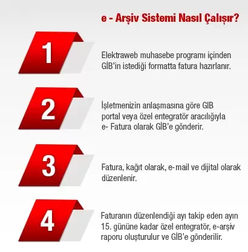
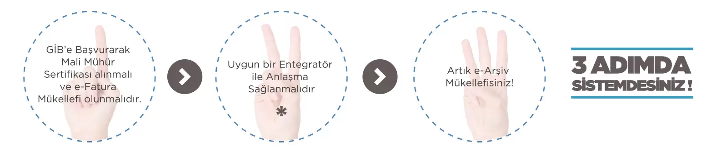

DİJİTAL DÖNÜŞÜM e-FATURA, e-ARŞİV ve e-DEFTER İLE BAŞLAR
Otelinizin “Dijital Dönüşüm” sürecinizi Elektra ile yönetebilirsiniz.
e-Fatura, e-Defter ve e-Arşiv modülümüz ile finansal operasyonlarınızı yasaya uygun olarak kolaylıkla gerçekleştirebilirsiniz.
KİMLER e-FATURA KAPSAMINDADIR?
20.06.2015 tarihli ve 29392 sayılı Resmi Gazete’de yayımlanan 454 Sıra No.lu Vergi Usul Kanunu Genel Tebliğinde aşağıda sayılan mükelleflere elektronik defter tutma ve e-fatura uygulamasına geçme zorunluluğu getirilmiştir.
- 2018 hesap dönemi brüt satış hasılatı (veya satışları ile gayrisafı iş hasılatı) 10 Milyon TL ve üzeri olan mükellefler 1/1/2020 tarihinden itibaren e-Fatura uygulamasına geçmek zorundadır.
- 2018 veya 2019 hesap dönemleri brüt satış hasılatı (veya satışları ile gayrisafı iş hasılatı) 5 Milyon TL ve üzeri olan mükellefler 1/7/2020 tarihinden itibaren e-Fatura uygulamasına geçmek zorundadır
- 2020 veya müteakip hesap dönemleri brüt satış hasılatı (veya satışları ile gayrisafı iş hasılatı) 5 Milyon TL ve üzeri olan mükellefler ilgili hesap dönemini izleyen yılın yedinci ayının başından itibaren, eFatura uygulamasına geçmek zorundadır
- e-İrsaliye uygulamasına geçiş zorunluluğu nedeniyle e-Fatura uygulamasına geçmek zorunda olanlar e-İrsaliye uygulamasına geçiş zorunluluğunun başladığı tarihte eFatura uygulamasına geçmek zorundadır
- e-Arşiv Fatura uygulamasına geçiş zorunluluğu nedeniyle e-Fatura uygulamasına geçmek zorunda olanlar e-Arşiv Fatura uygulamasına geçiş zorunluluğunun başladığı tarihte eFatura uygulamasına geçmek zorundadır
e-DEFTER NEDİR?
Şekil hükümlerinden bağımsız olarak Vergi Usul Kanununa ve/veya Türk Ticaret Kanununa göre tutulması zorunlu olan defterlerde yer alması gereken bilgileri kapsayan elektronik kayıtlar bütünüdür.
KİMLER e-DEFTER KAPSAMINDADIR?
e-Fatura uygulamasına geçiş zorunluluğu bulunan mükellefler;
- e-Fatura uygulamasına geçiş süresi içinde (e-Fatura uygulamasına yıl içinde zorunlu olarak geçen mükellefler bakımından izleyen yılın başından itibaren ), 2018 yada 2019 yılı hasılatı 5.000.000 TL yi geçenler 01.01.2021 tarihinden itibaren. (e-Fatura’ya geçişi 1/7/2020-yıl içine rastlayan bir tarih olduğu için)
- 2018 yılı hasılatı 10.000.000 TL yi geçenler 01.01.2020 tarihinden itibaren
- 2018 yılında internet üzerinden mal ve hizmet satışı yapan ve brüt satış hasılatı 5 Milyon TL ve üzerinde olan mükellefler 1.1.2020 tarihinden itibaren e-Defter uygulamasını kullanmak zorundadır
e-ARŞİV NEDİR?

e-Fatura mükellefi olmayan gerçek ve tüzel kişilere, 433 sıra numaralı Vergi Usul Kanunu Genel Tebliğinde yer alan şartlara uygun olarak elektronik ortamda fatura düzenlenmesine ve faturanın 2. nüshasının elektonik ortamda saklanabilmesine imkan sağlayan uygulamadır.
KİMLER e-ARŞİV KAPSAMINDADIR?
- E-Fatura Uygulamasına Zorunlu veya İsteğe Bağlı olarak Dâhil Olan/Olacak Olan Mükellefler ( E Fatura mükellefi olmayanlara düzenlenecek faturalar) e-Arşiv uygulamasına geçmek zorundadır. Hali hazırda e-Fatura uygulamasına dahil olanlar 1.1.2020‘de, 1.1.2020’den sonra e-Fatura uygulamasına dahil olanlar ise e-Fatura uygulamasına geçilen tarihte e-Arşiv uygulamasına geçişlerini tamamlamalıdır
- İnternet üzerinden mal ve hizmet satışı yapan ve 2015 ve müteakip hesap dönemlerinde brüt satış hasılatları 5 Milyon TL ve üzerinde olan mükellefler ilgili hesap dönemine ilişkin gelir veya kurumlar vergisi beyannamesinin verileceği tarihi takip eden hesap döneminin başına kadar e-Arşiv uygulamasına geçmek zorundadır. İnternet satış yapan ve 2018 yılında 5 milyon TL ve üzerinde hasılat elde edenler 1/1/2020 tarihinden itibaren e-Arşiv uygulamasına geçmek zorundadır
- e-Arşiv Fatura uygulamasına dahil olmayan mükelleflerce, 1/1/2020 tarihinden itibaren vergi mükellefi olmayanlara düzenlenecek faturaların, vergiler dahil toplam tutarı 30 Bin TL’yi aşanlar faturalarını e-Arşiv Fatura olarak GİB Portallerı üzerinden düzenleyebilecekleri gibi e-Arşiv uygulamasına da geçebilirler
- e-Arşiv Fatura uygulamasına dahil olmayan mükelleflerce, 1/1/2020 tarihinden itibaren vergi mükelleflerine düzenlenecek faturaların, vergiler dahil toplam tutarı 5 Bin TL’yi aşanlar faturalarını e-Arşiv Fatura olarak GİB Portallerı üzerinden düzenleyebilecekleri gibi e-Arşiv uygulamasına da geçebilirler
e-ARŞİV SİSTEMİNE NASIL DAHİL OLABİLİRSİNİZ?

Faturalarınızı Fiziksel Ortamda Saklamaya Son: Faturalarınızı kağıt olarak saklama ve fatura yığınları arasından aradığınızı bulma derdiniz ortadan kalkar. Aynı zamanda faturalarınızın fiziksel yıpranmalarını engellemiş ve çok daha güzenli bir ortamda saklamış olursunuz
Müşteri Memnuniyetini Arttırır: Son tüketici aldığı malı iade etmek isterse kendisine email olarak iletilen faturanın bir çıktısını alıp iadeye ilişkin bölümü doldurması ve ürün ile birlikte satın aldığı yere göndermesi yeterli olacaktır.